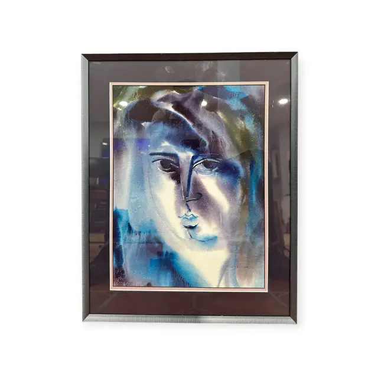
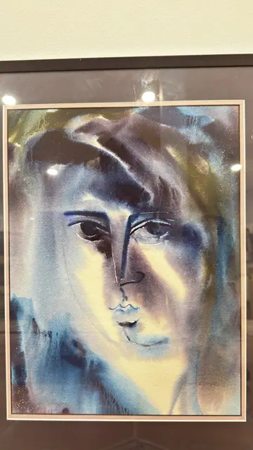
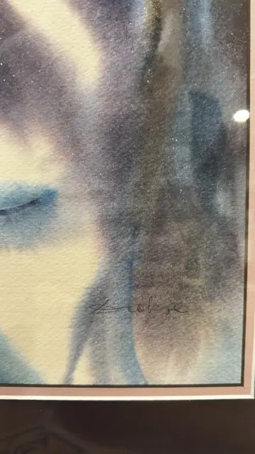

Paintings & Prints
Modern Watercolour Portrait Face in Blue, Signed, Framed
Unknown · 1980s-1990s
Price Upon Request



About the Item
A large contemporary watercolour in which a mask-like face is drawn out of loose, flooded washes: the features are reduced to two arched brows, almond eyes, a straight nose line and full lips, while the hair sweeps back in broad sweeps of indigo, plum and olive. Salt and granulation effects speckle the darker passages with white, and the light falls as a cream diagonal across the cheek. The mood is cool and decorative, closer to graphic design than to portraiture, presented in a plum mat with a pink inner line and a black frame. Medium: watercolour on paper. Signed lower right of the sheet. Condition: No visible damage; strong glare and reflections on the glass in all views.
Details
- Creator:
- Unknown
- Creation Year:
- 1980s-1990s
- Dimensions:
- Height: 21.0 in (53.34 cm)
Width: 16.75 in (42.55 cm)
outside of frame - Medium:
- watercolour on paper
- Period:
- 20Th
- Condition:
- Offered in the condition shown in the photographs.
- Reference Number:
- VO-207
- Documentation:
- no certificate present